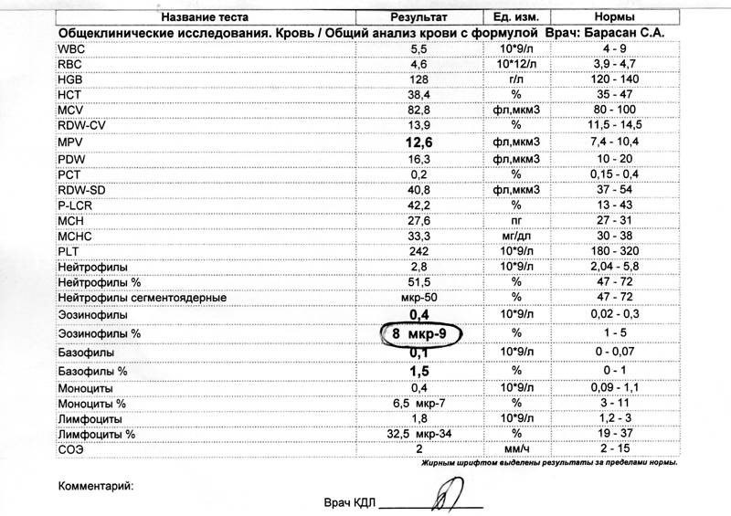

«Если против какой-нибудь болезни предлагается очень много средств,
то значит болезнь неизлечима»
Известно более 250 видов глистов (гельминтов), которые, попадая в организм, поражают: желудочно-кишечный тракт, сердечно-сосудистую, дыхательную, эндокринную, мочеполовую, опорно-двигательную и нервную системы. Места обитания внутри человеческого тела расширяются до освоения в любых тканях, мышцах, в головном мозге, в глазах. Способность маскироваться под любые болезни настолько огромна, что только за счёт клинических исследований и операционного вмешательства врачи и хирурги находят в тяжелой форме колонии гельминтов. Паразитарные инфекции могут приводить к тяжелому истощению организма и смерти.
Постоянно совершенствуясь и мутируя, возбудители паразитарных этиологий научились формировать устойчивые эндемические очаги. Процесс оздоровления очага даёт лишь кратковременный результат, а затем инвазия снова, а порой ещё сильнее, восстанавливается у тех же лиц.
Высокая устойчивость очагов к лечебным процедурам объясняется дублирующими и разнообразными механизмами саморегуляции. Это связано с тем, что, во-первых, развитие гельминтов происходит в разных стадиях жизненного цикла со сменой экологических требований. Паразит внедряется в организм на одной стадии, а покидает в другой. Во-вторых, у гельминтов выявлен целый ряд антигенов, общих с антигенами человека, и иммунные свойства характеризуются очень слабой степенью напряжённости, и реакция иммунитета проявляется только на личиночную стадию из-за высокой антигенной активности секретов и экскретов личинок.
Гельминты развиваются медленно, живут продолжительно, и поэтому, не возникает острых вспышек или обострений. Поэтому появление новых хронических заболеваний с неизвестной этиологией, рост онкологических заболеваний показывают где таится опасность или проблема.
Большинство паразитов имеют сложные структуры, кворумы, содержащие бактерии, внутри которых могут находиться вирусы, и при гибели гельминтов происходит выброс другой инфекции.
Постоянная диагностика и профилактика — являются защитой организма от неизлечимых болезней и поддержанием иммунитета от агрессивной среды.
Современная медицина располагает широким арсеналом методов обнаружения возбудителя или его компонентов: анализы крови, электронная микроскопия тканей, серологические, иммуноферментные, биопробы, молекулярная гибридизация и другие исследования.
Но существует, уникальный экспресс-метод нелинейной диагностики, которая охватывает широкий спектр инфекций, паразитарных агентов за короткое время.
Российские и зарубежные учёные уже доказали, что каждый орган (здоровый и больной) имеет свою определённую частоту и, более того, каждый вирус, микроорганизмы или гельминты имеют тоже свои индивидуальные частотные характеристики (примеры графиков на рис. 1, 2, 3, 4).
Спектральные или частотные характеристики инфекционных агентов, отраженные на графике резонансных частот, с полихромной шкалой Флейндлера
Холдинг «Научно-исследовательский институт Здоровьесберегающих технологий» Ярославский НИИ ЗСТ, разрабатывая «Паспорт здоровья», через первичную профилактику и исследования функциональных резервов организма, собрал базу данных по оценке заражения паразитарными инфекциями. Оказалось, что самая чувствительная система у детей! Гельминты, захватывая территорию детского организма, порождают: дисбактериоз, аллергию, простудные заболевания, потерю концентрации внимания и даже отставание в развитии. Взрослые, теряя резервные возможности организма, ищут причины своих болезней, и, пройдя огромное количество микробиологических методов исследования, теряют надежду на выздоровление.
Например, пациентка обратилась за консультацией с жалобами на хроническое течение катарального бронхита, кашлем и одышкой. При серологической диагностике паразитарной инфекции, она получила ложноотрицательные результаты, на фоне иммунодефицитных состояний. Лечение антибиотиками и другими лекарственными препаратами ухудшали её самочувствие.
Высокие количественные показатели в клинических анализах эозинофилов «говорят» о высокой вероятности паразитарного генеза (рис. 5). По данным нелинейной диагностики, через экспресс-метод, было выявлено паразитарное заболевание, вызываемое круглыми червями — Стронгилоидоз (Strongyloides), в виде локального воспалительного процесса в правом верхнедолевом бронхе.

Рисунок 5. Анализ эозинофилов
Пациентке были назначены (под присмотром врача) медицинские препараты и восстановительные процедуры для локального и конкретного лечения.
Примеров, что NLS-диагностика обладает высочайшей степенью идентификации паразитов различной этиологии, немалое количество, но постоянная профилактика, гигиена, очищение организма и сотрудничество с врачами — поможет предотвратить тяжёлые заболевания.
Надо помнить, что вирусы, попадающие в организм в кровь, в жидкие среды, сразу уничтожаются клетками чистой крови. При поражении организма паразитами более 10% массы тела, они начинают размножаться, а при поражении до 42% массы тела — наступает рак.
Современные разработки в области химии, физики и биологии доказывают, что до появления симптомов болезней, в организме образуются патологические зоны воды с неправильной структурой — участки тяжёлой воды. Это «мёртвые болота», в которых начинают интенсивно увеличивать свой потенциал паразиты и вирусы.
В 1933 году Гилберт Льюис и американский физикохимик Роналд Макдональд открыли мёртвую воду, в молекулах которой вместо водорода присутствует изотоп дейтерий. Такой воды в природе ничтожно мало, но была обнаружена и в организме человека.
Новые технологии позволили изучить и доказать, что в тяжелой воде выживает только 70% простых микроорганизмов, а живучесть вирусов, гельминтов и бактерий — 100 %, и, что при 28%-процентом замещении водорода в тканях живых организмов приводит к бесплодию, а в случае 30% замещения — у животных наступает смерть.
Для человеческого организма тяжелая вода хоть и безвредна в небольших количествах, но отрицательно влияет на все процессы. Безусловно, чистая кровь останавливает развитие аутоиммунных механизмов, стимулирует регенерацию клеток, выявляет рецидивы и открывает адаптивные резервные возможности в изменяющемся мире.
В поддержании иммунитета, безусловно, является не просто постоянное употребление чистой воды, а замещение тяжёлой воды (дейтериевой) на лёгкую (протиевую).
В данном случае, для нас этот вопрос является кардинальным, поскольку мы ставим перед собой цель: разработка систем мер профилактики и предупреждения риска возникновения новых заболеваний.
Но, самое главное, любой энергетический дисбаланс в сознании человека, лишает организм высокой вибрационной частоты, открывая его паразитам, живущим в низких частотах. Энергетическое и духовное истощение порождает неизлечимые болезни, при которых, даже самая прогрессивная медицина не сможет помочь!
Наталья ЛИТОВА,
Ирина ТРОФИМОВА,
Холдинг «Научно-исследовательский институт
Здоровьесберегающих технологий», Ярославский НИИ ЗСТ.

{kind=link}
{kind=link}
{kind=link}
{kind=link}